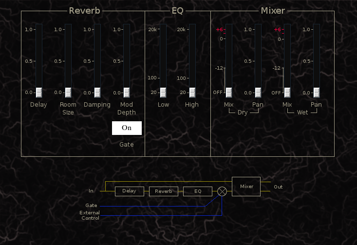

Rumklang
 Previous( Ring Modulator )
Next( Tremolo )
Home
Contents
Synth Catalog
Previous( Ring Modulator )
Next( Tremolo )
Home
Contents
Synth Catalog
Reverb
- Delay - pre-reverb delay time
- Room Size -
- Damping -
- Mod Depth - External control over wet signal mix
- Gate - If enabled wet signal audible only if at least one key is down
- Low - Wet lowpass filter cutoff
- High - Wet highpass filter cutoff
- Dry Mix - Dry signal mix. See volume slider
- Dry Pan - Dry signal pan position
- Wet Mix - Wet signal mix
- Wet Pan - Wet signal pan position
Buses:
- inbus - Audio input
- outbus1 - Audio output 1
- outbus2 - Audio output 2
- xbus - External control input
Parameters:
- gatted - Wet signal gate mode (0 ... 1)
- preDelay - Pre reverb delay time (0 ... 0.333)
- roomSize - Reverb room size (0 ... 1)
- damp - Reverb high-frequency damping (0|1)
- lpcutoff - Wet lowpass cutoff (20 ... 20k)
- hpcutoff - Wet highpass cutoff (20 ... 20k)
- modDepth - External modulation depth of wet signal (0 ... 1)
- wetAmp - Wet linear amp (0 ... 2)
- wetPan - Wet pan position (-1 ... +1)
- dryAmp - Dry linear amp (0 ... 2)
- dryPan - Dry pan position (-1 ... +1)
Previous( Ring Modulator ) Next( Tremolo ) Home Contents Synth Catalog